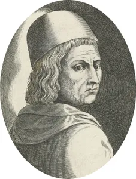

<!DOCTYPE html>
<html lang="en">
<head>
    <meta charset="UTF-8">
    <meta http-equiv="X-UA-Compatible" content="IE=edge">
    <meta name="viewport" content="width=device-width, initial-scale=1.0">
    <title>Document</title>
</head>
<body>
    
</body>
</html>

<h2>
    Marsilio Ficino
</h2>

<p>
    While the spirit of the Renaissance 
    ultimately took many forms, 
    it was expressed earliest by the 
    intellectual movement called humanism. <br> Humanism was initiated by secular men of letters rather than
     by the scholar-clerics who had dominated medieval intellectual life and had developed the 
     Scholastic philosophy. Humanism began and achieved fruition first in Italy. Its predecessors
      were men like Dante and Petrarch, and its chief protagonists included Gianozzo Manetti, Leonardo 
      Bruni, Marsilio Ficino, Giovanni Pico della Mirandola, Lorenzo Valla, and Coluccio Salutati. <br>
       The fall of Constantinople in 1453 provided humanism with a major boost, for many eastern scholars
        fled to Italy, bringing with them important books and manuscripts and a tradition of Greek 
        scholarship.
</p>